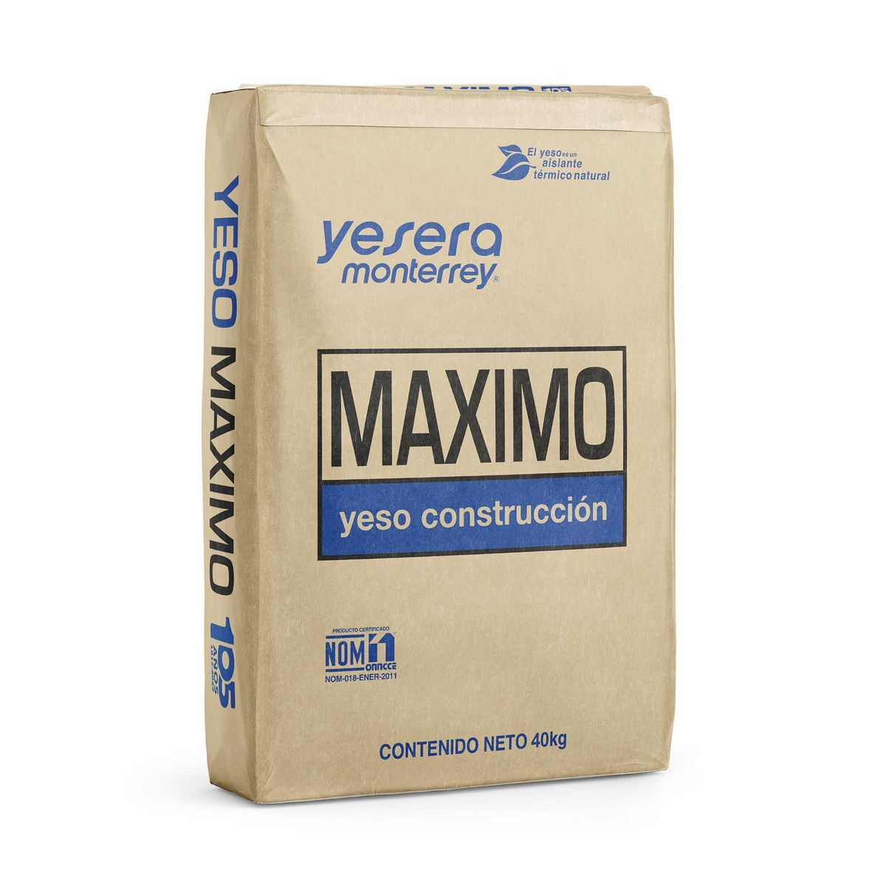

Yeso en polvo

Material que se prepara con agua para obtener una pasta moldeable. Sirve para alisar paredes, rellenar pequeñas imperfecciones y realizar determinados acabados decorativos en interiores.